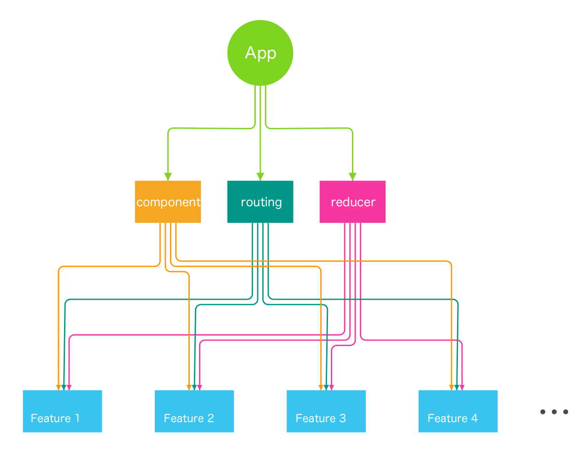

Rekit app architecture
You can create a React app by Rekit with one command line with no configuration needed. The app is designed to be scalable, testable and maintainable so that it meets the requirements of a real-world application.
One of the key concepts of Rekit is dividing a large app into small pieces called features. A feature is some capability of an application. It's small and well decoupled, so it's easy to understand and maintain.
You can also read the introduction at: https://medium.com/@nate_wang/feature-oriented-architecture-for-web-applications-2b48e358afb0 .
A React app already naturally constructs UI by component tree. Actually by combining Redux reducers, defining child routes of React router config, we can also divide the overall application store, routing configuration into small pieces. By doing this we can manage the application complexity into ordered pieces. See below picture for the overall Rekit app architecture:

Each feature is a much smaller 'app' which is easy to understand. A large application is composed by many such small features.
Folder structure
As the above picture shows, Rekit creates an application with a special folder structure. It groups application logic by features. Each feature contains its own components, actions, routing config etc.
|-- project-name
| |-- src
| | +-- common
| | |-- features
| | | |-- home
| | | | +-- redux
| | | | |-- index.js
| | | | |-- DefaultPage.js
| | | | |-- DefaultPage.less
| | | | |-- route.js
| | | | |-- styles.less
| | | | |-- ...
| | | +-- feature-1
| | | +-- feature-2
| | +-- styles
| --- tools
| | +-- plugins
| --- scripts
| | |-- build.js
| | |-- start.js
| | |-- ...
|-- .eslintrc
|-- .gitignore
|-- ...